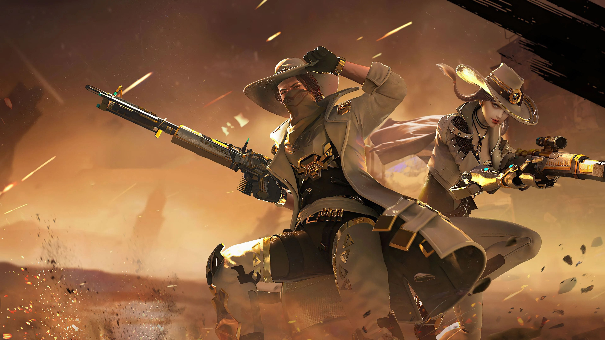
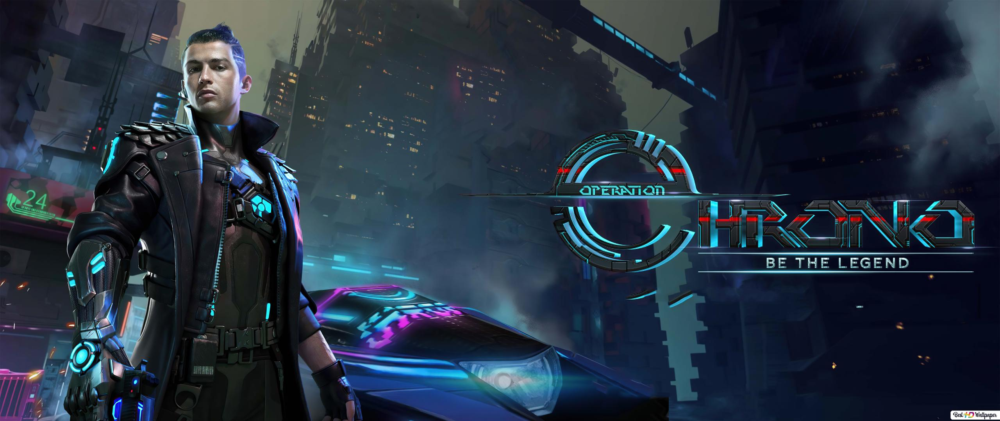

Asynchronous multiplayer is a form of multiplayer gameplay where players do not have to be playing at the same time.[10] This form of multiplayer game has its origins in play-by-mail games, where players would send their moves through postal mail to a game master, who then would compile and send out results for the next turn. Play-by-mail games transitioned to electronic form as play-by-email games.

[11] Similar games were developed for bulletin board systems, such as Trade Wars, where the turn structure may not be as rigorous and allow players to take actions at any time in a persistence space alongside all other players, a concept known as sporadic pla.[12] These types of asynchronous multiplayer games waned with the widespread. based on sporadic play and use social interactions with other players, lacking direct player versus player game modes but allowing players to influence other players' games, coordinated through central game servers, another facet of asynchronous play.[12]

Cooperative video game, often abbreviated as co-op, is a video game that allows players to work together as teammates, usually against one or more non-player character opponents (PvE). It is distinct from other multiplayer modes, such as competitive multiplayer modes like player versus player (PvP) or deathmatch. Playing simultaneously allows players to assist one another in many ways: passing weapons or items, healing, providing covering fire in a firefight, and performing cooperative maneuvers such as boosting a teammate up and over obstacles. Co-op games can be played over a network via a local area networks or wide area networks, such as in the Destiny and Borderlands series, while other co-op games can be played locally using one or multiple input controllers, with It Takes Two as an example. Some games such as Mario Kart Wii and Call of Duty's co-op modes allow two players from the same console to play with others online.
Immersive sims, such as Deus Ex and System Shock,
are games built around emergent gameplay. These games give the player-character a range
of abilities.
To move past a guard blocking a door, the player could opt to directly attack the guard, sneak up
and knock the guard unconscious, distract the guard to move away from their post, or use parkour
Such emergence may also occur in games through open-ended gameplay and shee
weight of simulated content, in Minecraft, Dwarf Fortress or Space Station 13.
A game level or world can be linear, nonlinear or interactive. In a linear game, there is only one path that the player must take through the level, however, in games with nonlinear gameplay, players might have to revisit locations or choose from multiple paths to finish the level. As with other game elements, linear level design is not absolute While a nonlinear level can give the freedom to explore or backtrack, there can be a sequence of challenges that a player must solve to complete the level. If a player must confront the challenges in a fixed order nonlinear games will often give multiple approaches to achieve said objectives. A more linear game requires a player to finish levels in a fixed sequence to win. The ability to skip, repeat, or choose between levels makes this type of game less linear. .
